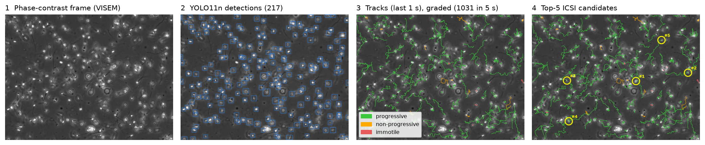
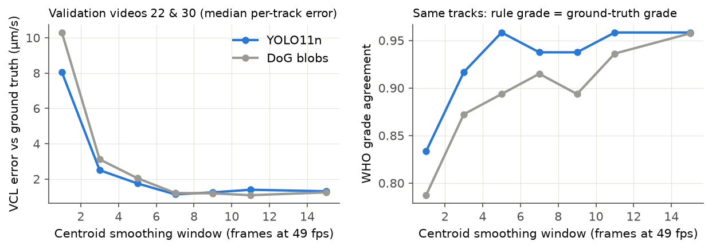
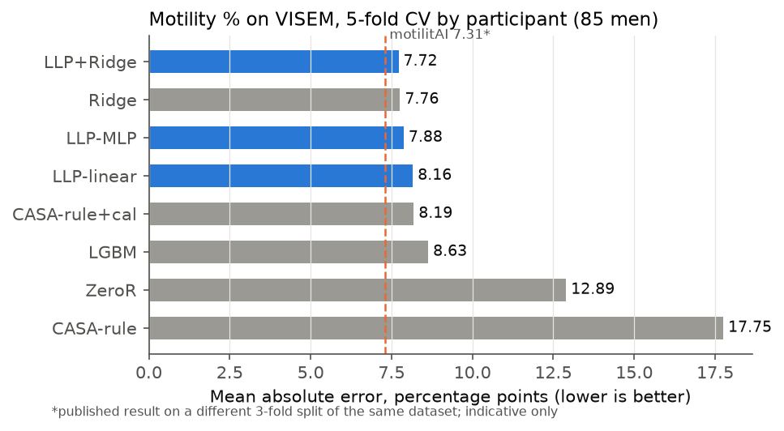
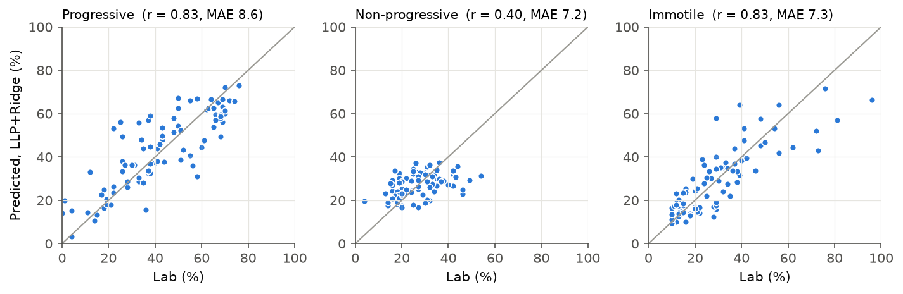
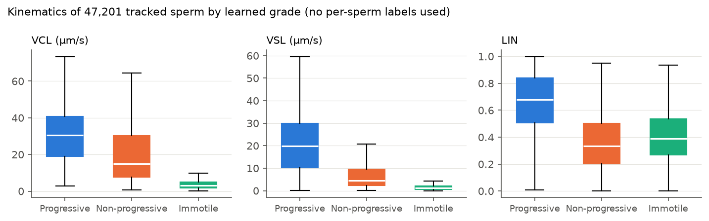
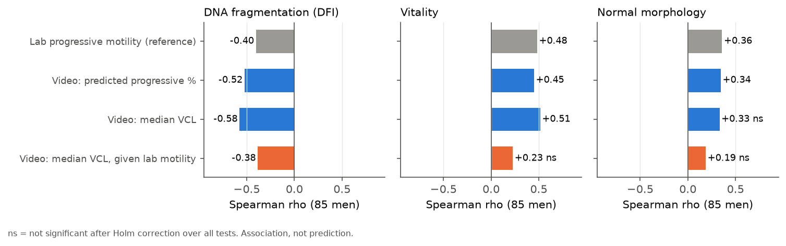

At a glance

Why it matters
In ICSI an embryologist chooses one sperm per egg, by eye. That choice is the first quality gate for every embryo that is later vitrified, and it is subjective. SpermSelect-AI turns it into measurements: sample-level motility and concentration that agree with the andrology lab, plus an explainable per-sperm ranking.
Scope, stated plainly: no public dataset links individual sperm to fertilisation, embryo or vitrification outcomes, so none are predicted here. The ranking is a kinematics-based proposal that needs prospective validation.
Method
Detect & track. YOLO11n fine-tuned on VISEM-Tracking (CPU). A vectorised Kalman filter with Hungarian assignment carries identity, because sperm look alike and only motion tells them apart.
Measure. WHO 2021 / CASA kinematics (VCL, VSL, VAP, LIN, STR, WOB, ALH, BCF) in 1-s windows. Calibration of 0.495 µm/px was verified from flagellum length.
Grade without per-sperm labels. No dataset labels individual sperm, so the grader is trained by learning from label proportions: each man's mix of predicted grades must match his lab percentages. In simulation it recovers per-sperm grades with 95.9 % accuracy (supervised ceiling 97.5 %, WHO-style rule 50.2 %).
Rank. Score = P(progressive) × straightness × speed × track reliability.
Every choice (checkpoint, confidence threshold, smoothing window) was made on validation videos. Test videos are the official held-out VISEM-Tracking set; motility uses the official participant-level 5-fold split.
Results
Detection and tracking (official held-out videos 52, 54, 60, 82)
| Detector | Precision | Recall | F1 | MOTA | IDF1 |
|---|---|---|---|---|---|
| DoG blobs (training-free) | 0.684 | 0.851 | 0.759 | 0.461 | 0.716 |
| YOLO11n (ours) | 0.827 | 0.804 | 0.815 | 0.656 | 0.707 |
| Ground-truth boxes (tracker ceiling) | — | — | — | 0.999 | 0.972 |
COCO mAP50 on these videos is low (0.23). That is an annotation artifact: two test videos use ~29 px boxes vs ~18 px elsewhere, while centre error stays at 1.4–2.8 px. Point-matched F1 is the fair metric here.
A kinematics correction that mattered

Sample-level motility vs the lab (85 men, 5-fold CV)



Beyond motility: DNA integrity

Clinician app
Upload a phase-contrast video and get an ICSI shortlist highlighted on the video, a colour-coded tracked video, a per-sperm table (CSV) and a PDF report against WHO 2021 reference limits. Calibration is adjustable for other microscopes. Demo available on request.
Limitations
Single-centre public data from one optical set-up, recorded in raw semen rather than ICSI dishes. Per-sperm grading is validated in simulation and at sample level, not against per-sperm labels. Morphology is not assessed at this magnification. Research prototype, not a medical device.